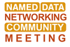

UPCOMING EVENTS
5854 Mass Metrology Seminar
MON, FEB 26 - FRI, MAR 8 2024
The Mass Metrology Seminar is a two-week, "hands-on" seminar. It incorporates approximately 30 percent lectures
NDN Community Meeting 2024
WED, MAR 6 - THU, MAR 7 2024
The 2024 Named Data Networking (NDN) Community Meeting will be hosted by the National Institute of Standards and

HOME
TOPICS
NEWS & EVENTS
ABOUT US

View Past Events
View All UpComing Events